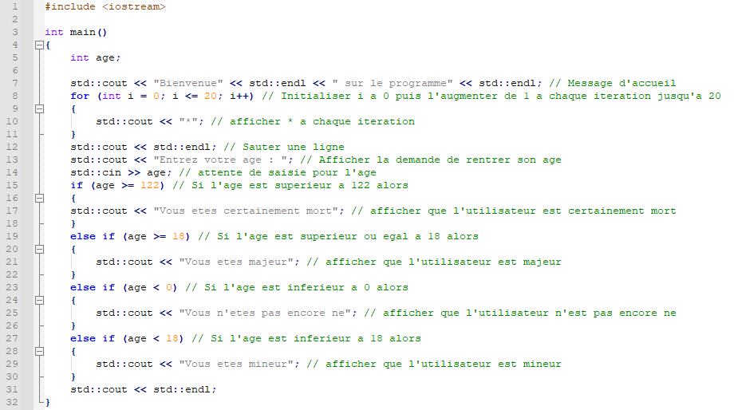

Je suis WILSON Liu, actuellement étudiant de BTS SN-IR, je suis passionné d'informatique notamment la programmation.
Je suis né en France et j'utilise Arch d'ailleurs.
Je suis le créateur de nombreuse réalisations.
J'ai fais ça une fois en C++, c'était fun.
J'ai aussi participé à la création d'un jeu en Python pendant mon année scolaire de terminale pendant mes cours d'NSI (mon pseudonyme Github est LiuFeiXiao).
Voici la liste des établissements dans lesquels j'ai effectué mes formations.
Comme diplômes et certifications je possède :
Adresse mail: liu.wilson@outlook.fr
Copyright © 2022 Wilson Liu.